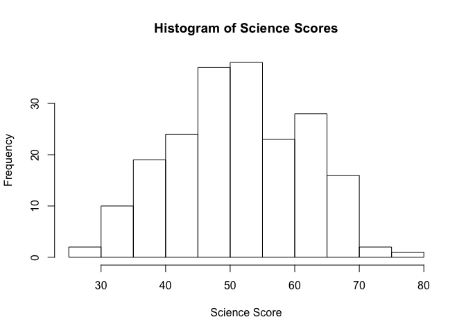
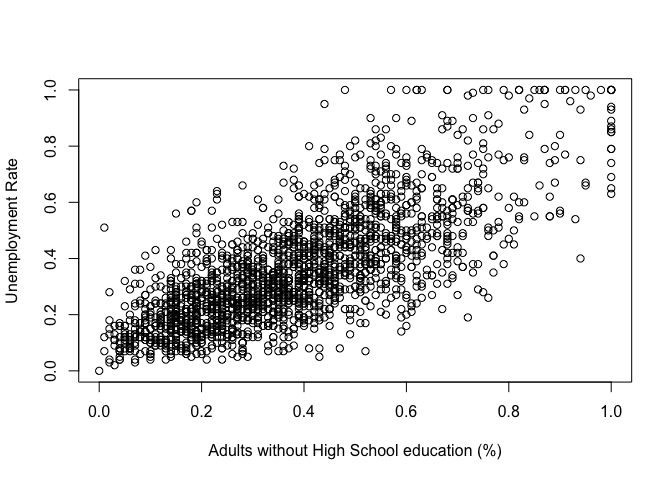
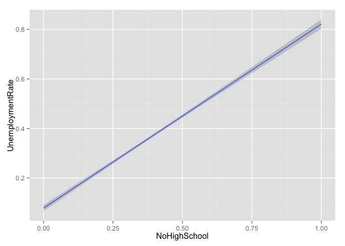
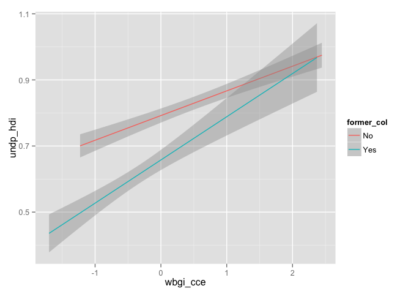

1. Introduction to R, OLS, data manipulation and basic visualisations
1.1 Seminar
R training for SPP staff (session 1)
Javier Sajuria
2 December 2015
Introduction to R
Scalar objects
# Create a numeric and a character variable
a <- 5
class(a) # a is a numeric variable
[1] "numeric"
a
[1] 5
b <- "Yay stats class"
class(b) # b is a string variable
[1] "character"
b
[1] "Yay stats class"
Save your script, and re-open it to make sure your changes are still there.
Vectors and subsetting
# Create a vector
my.vector <- c(10,-7,99,34,0,-5) # a vector
my.vector
[1] 10 -7 99 34 0 -5
length(my.vector) # how many elements?
[1] 6
# subsetting
my.vector[1] # 1st vector element
[1] 10
my.vector[-1] # all elements but the 1st
[1] -7 99 34 0 -5
my.vector[2:4] # the 2nd to the 4th elements
[1] -7 99 34
my.vector[c(2,5)] # 2nd and 5th element
[1] -7 0
my.vector[length(my.vector)] # the last element
[1] -5
# delete variable 'a' from workspace
rm(a)
# delete everything from workspace
rm(list=ls())
Matrices
# create a matrix
# type help("matrix") into the console and press ENTER
# read Description, Usage and Arguments
my.matrix1 <- matrix(data = c(1,2,30,40,500,600), nrow = 3, ncol = 2, byrow = TRUE,
dimnames = NULL)
my.matrix2 <- matrix(data = c(1,2,30,40,500,600), nrow = 2, ncol = 3, byrow = FALSE)
# How are the matrices different?
my.matrix1
[,1] [,2]
[1,] 1 2
[2,] 30 40
[3,] 500 600
my.matrix2
[,1] [,2] [,3]
[1,] 1 30 500
[2,] 2 40 600
# subsetting a matrix
my.matrix1[1,2] # element in row 1 and column 2
[1] 2
my.matrix1[2,1] # element in row 2 and column 1
[1] 30
my.matrix1[,1] # 1st column only
[1] 1 30 500
my.matrix1[1:2,] # rows 1 to 2
[,1] [,2]
[1,] 1 2
[2,] 30 40
my.matrix1[c(1,3),] # rows 1 and 3
[,1] [,2]
[1,] 1 2
[2,] 500 600
Installing and loading packages
Packages are user-generated pieces of code that expand the basic options of R. R is a very flexible language, that allows to go way beyond the base options.
install.packages("texreg") # Creates tables both in ASCII text, LaTeX or Word, similar to outreg
install.packages("lmtest") # Provides different tests of linear models
install.packages("readxl") # Opens and writes Excel files
install.packages("sandwich") # Calculates heteroskedasticity consistent SEs
install.packages("car") # General functions to run regressions and manage data
install.packages("plm") # Panel data models
install.packages("dplyr") # General data manipulation
install.packages("tidyr") # Further data manipulations
install.packages("ggplot2") # Advanced graphical machine
install.packages("effects")
In some cases, we want to install previous versions of packages. In this case, we will install Zelig, a comprehensive package that we will use to estimate and plot predicted probabilities. We will install the same version we are using to teach the MSc students:
install.packages("https://cran.r-project.org/src/contrib/Archive/Zelig/Zelig_4.2-1.tar.gz",
repos=NULL,
type="source")
Once packages are installed, they need to be loaded. The reason is that some packages have overlapping functions with others, so we usually care about the order in which we load them
library(foreign) ## comes with the basic installation and allows us to open files in other formats such as Stata, SPSS or SAS
library(car)
library(readxl)
library(texreg)
Version: 1.35
Date: 2015-04-25
Author: Philip Leifeld (University of Konstanz)
Please cite the JSS article in your publications -- see citation("texreg").
library(Zelig)
Loading required package: boot
Attaching package: 'boot'
The following object is masked from 'package:car':
logit
Loading required package: MASS
Loading required package: sandwich
ZELIG (Versions 4.2-1, built: 2013-09-12)
+----------------------------------------------------------------+
| Please refer to http://gking.harvard.edu/zelig for full |
| documentation or help.zelig() for help with commands and |
| models support by Zelig. |
| |
| Zelig project citations: |
| Kosuke Imai, Gary King, and Olivia Lau. (2009). |
| ``Zelig: Everyone's Statistical Software,'' |
| http://gking.harvard.edu/zelig |
| and |
| Kosuke Imai, Gary King, and Olivia Lau. (2008). |
| ``Toward A Common Framework for Statistical Analysis |
| and Development,'' Journal of Computational and |
| Graphical Statistics, Vol. 17, No. 4 (December) |
| pp. 892-913. |
| |
| To cite individual Zelig models, please use the citation |
| format printed with each model run and in the documentation. |
+----------------------------------------------------------------+
Attaching package: 'Zelig'
The following object is masked from 'package:utils':
cite
library(sandwich)
library(plm)
Loading required package: Formula
library(effects)
Attaching package: 'effects'
The following object is masked from 'package:car':
Prestige
library(ggplot2)
library(tidyr)
Attaching package: 'tidyr'
The following object is masked from 'package:texreg':
extract
library(lmtest)
Loading required package: zoo
Attaching package: 'zoo'
The following objects are masked from 'package:base':
as.Date, as.Date.numeric
library(dplyr)
Attaching package: 'dplyr'
The following object is masked from 'package:plm':
between
The following objects are masked from 'package:Zelig':
combine, summarize
The following object is masked from 'package:MASS':
select
The following objects are masked from 'package:stats':
filter, lag
The following objects are masked from 'package:base':
intersect, setdiff, setequal, union
To set up your working directory, you need to use the setwd() function. E.g.:
setwd("~/R seminar")
Downloading data and descriptive stats
One traditional format of data as CSV. These files do not contain any metadata, but they are usually compatible with any statistical software. The way to load a dataset is assigning it to an object (of class dataframe). For CSVs, we use read.csv():
# load the Polity IV dataset
my.data <- read.csv("http://uclspp.github.io/PUBLG100/data/polity.csv")
# View(my.data) # opens a window with the data set
head(my.data) # retrieves the first 6 observations
id scode country year polity2 democ nato
1 1 AFG Afghanistan 1800 -6 1 0
2 2 AFG Afghanistan 1801 -6 1 0
3 3 AFG Afghanistan 1802 -6 1 0
4 4 AFG Afghanistan 1803 -6 1 0
5 5 AFG Afghanistan 1804 -6 1 0
6 6 AFG Afghanistan 1805 -6 1 0
head(my.data, n=10) # you can manually set up the amount of observations shown
id scode country year polity2 democ nato
1 1 AFG Afghanistan 1800 -6 1 0
2 2 AFG Afghanistan 1801 -6 1 0
3 3 AFG Afghanistan 1802 -6 1 0
4 4 AFG Afghanistan 1803 -6 1 0
5 5 AFG Afghanistan 1804 -6 1 0
6 6 AFG Afghanistan 1805 -6 1 0
7 7 AFG Afghanistan 1806 -6 1 0
8 8 AFG Afghanistan 1807 -6 1 0
9 9 AFG Afghanistan 1808 -6 1 0
10 10 AFG Afghanistan 1809 -6 1 0
tail(my.data) # retrieves the last 6 observations
id scode country year polity2 democ nato
16889 16889 ZIM Zimbabwe 2009 1 3 0
16890 16890 ZIM Zimbabwe 2010 1 3 0
16891 16891 ZIM Zimbabwe 2011 1 3 0
16892 16892 ZIM Zimbabwe 2012 1 3 0
16893 16893 ZIM Zimbabwe 2013 4 5 0
16894 16894 ZIM Zimbabwe 2014 4 5 0
levels(my.data$country) # levels displays levels of a factor variable
[1] "Afghanistan " "Albania "
[3] "Algeria " "Angola "
[5] "Argentina " "Armenia "
[7] "Australia " "Austria "
[9] "Azerbaijan " "Baden "
[11] "Bahrain " "Bangladesh "
[13] "Bavaria " "Belarus "
[15] "Belgium " "Benin "
[17] "Bhutan " "Bolivia "
[19] "Bosnia " "Botswana "
[21] "Brazil " "Bulgaria "
[23] "Burkina Faso " "Burundi "
[25] "Cambodia " "Cameroon "
[27] "Canada " "Cape Verde "
[29] "Central African Republic " "Chad "
[31] "Chile " "China "
[33] "Colombia " "Comoros "
[35] "Congo Brazzaville " "Congo Kinshasa "
[37] "Costa Rica " "Croatia "
[39] "Cuba " "Cyprus "
[41] "Czech Republic " "Czechoslovakia "
[43] "Denmark " "Djibouti "
[45] "Dominican Republic " "East Timor "
[47] "Ecuador " "Egypt "
[49] "El Salvador " "Equatorial Guinea "
[51] "Eritrea " "Estonia "
[53] "Ethiopia " "Fiji "
[55] "Finland " "France "
[57] "Gabon " "Gambia "
[59] "Georgia " "Germany "
[61] "Germany East " "Germany West "
[63] "Ghana " "Gran Colombia "
[65] "Greece " "Guatemala "
[67] "Guinea " "Guinea-Bissau "
[69] "Guyana " "Haiti "
[71] "Honduras " "Hungary "
[73] "India " "Indonesia "
[75] "Iran " "Iraq "
[77] "Ireland " "Israel "
[79] "Italy " "Ivory Coast "
[81] "Jamaica " "Japan "
[83] "Jordan " "Kazakhstan "
[85] "Kenya " "Korea "
[87] "Korea North " "Korea South "
[89] "Kosovo " "Kuwait "
[91] "Kyrgyzstan " "Laos "
[93] "Latvia " "Lebanon "
[95] "Lesotho " "Liberia "
[97] "Libya " "Lithuania "
[99] "Luxembourg " "Macedonia "
[101] "Madagascar " "Malawi "
[103] "Malaysia " "Mali "
[105] "Mauritania " "Mauritius "
[107] "Mexico " "Modena "
[109] "Moldova " "Mongolia "
[111] "Montenegro " "Morocco "
[113] "Mozambique " "Myanmar (Burma) "
[115] "Namibia " "Nepal "
[117] "Netherlands " "New Zealand "
[119] "Nicaragua " "Niger "
[121] "Nigeria " "Norway "
[123] "Oman " "Orange Free State "
[125] "Pakistan " "Panama "
[127] "Papal States " "Papua New Guinea "
[129] "Paraguay " "Parma "
[131] "Peru " "Philippines "
[133] "Poland " "Portugal "
[135] "Prussia " "Qatar "
[137] "Romania " "Russia "
[139] "Rwanda " "Sardinia "
[141] "Saudi Arabia " "Saxony "
[143] "Senegal " "Serbia "
[145] "Serbia and Montenegro " "Sierra Leone "
[147] "Singapore " "Slovak Republic "
[149] "Slovenia " "Solomon Islands "
[151] "Somalia " "South Africa "
[153] "South Sudan " "Spain "
[155] "Sri Lanka " "Sudan "
[157] "Sudan-North " "Suriname "
[159] "Swaziland " "Sweden "
[161] "Switzerland " "Syria "
[163] "Taiwan " "Tajikistan "
[165] "Tanzania " "Thailand "
[167] "Togo " "Trinidad and Tobago "
[169] "Tunisia " "Turkey "
[171] "Turkmenistan " "Tuscany "
[173] "Two Sicilies " "UAE "
[175] "Uganda " "Ukraine "
[177] "United Kingdom " "United Province CA "
[179] "United States " "Uruguay "
[181] "USSR " "Uzbekistan "
[183] "Venezuela " "Vietnam "
[185] "Vietnam North " "Vietnam South "
[187] "Wuerttemburg " "Yemen "
[189] "Yemen North " "Yemen South "
[191] "Yugoslavia " "Zambia "
[193] "Zimbabwe "
# we drop all oberservations which are not from 1946
my.data <- my.data[my.data$year==1946,]
head(my.data)
id scode country year polity2 democ nato
147 147 AFG Afghanistan 1946 -10 0 0
248 248 ALB Albania 1946 -9 0 0
531 531 ARG Argentina 1946 -8 -88 0
669 669 AUL Australia 1946 10 10 0
884 884 AUS Austria 1946 10 10 0
1262 1262 BEL Belgium 1946 10 10 1
summary(my.data$polity2) # descriptive statistics of polity variable
Min. 1st Qu. Median Mean 3rd Qu. Max. NA's
-10.0000 -7.0000 -1.0000 0.2319 8.0000 10.0000 3
# now lets check if western countries were more democratic than the other countries in 1946
table(my.data$nato, my.data$polity2)
-10 -9 -8 -7 -6 -5 -4 -3 -1 0 1 2 3 4 5 7 8 10
0 4 7 3 3 4 3 2 5 3 1 1 5 1 1 3 2 2 8
1 0 1 0 0 0 0 0 0 0 0 0 0 0 0 1 0 0 9
# descriptive summary stats of polity variable by nato membership
summary(my.data$polity2[my.data$nato==0]) # not in nato
Min. 1st Qu. Median Mean 3rd Qu. Max. NA's
-10.000 -7.000 -3.000 -1.207 4.750 10.000 3
summary(my.data$polity2[my.data$nato==1]) # nato member
Min. 1st Qu. Median Mean 3rd Qu. Max.
-9.000 10.000 10.000 7.818 10.000 10.000
## illustration
boxplot(my.data$polity2 ~ as.factor(my.data$nato),
frame = FALSE,
main = "Polity IV Scores of NATO founders vs others in 1946",
xlab = "NATO member",
ylab = "Polity Score")

We can use the read_excel function from the readxl package to open Excel files. However, unlike with what we did for CSV files, the read_excel function does not directly download files, so we need to save them into our working directory.
Download 'High School and Beyond' Dataset
Make sure you save it into your working directory and then run:
student_data <- read_excel("hsb2.xlsx")
head(student_data)
Source: local data frame [6 x 11]
id female race ses schtyp prog read write math science socst
1 70 0 4 1 1 1 57 52 41 47 57
2 121 1 4 2 1 3 68 59 53 63 61
3 86 0 4 3 1 1 44 33 54 58 31
4 141 0 4 3 1 3 63 44 47 53 56
5 172 0 4 2 1 2 47 52 57 53 61
6 113 0 4 2 1 2 44 52 51 63 61
To open Stata files, we can use the read.dta() function:
world.data <- read.dta("http://uclspp.github.io/PUBLG100/data/QoG2012.dta")
head(world.data)
h_j wdi_gdpc undp_hdi wbgi_cce wbgi_pse former_col lp_lat_abst
1 -5 628.4074 NA -1.5453584 -1.9343837 0 0.3666667
2 -5 4954.1982 0.781 -0.8538115 -0.6026081 0 0.4555556
3 -5 6349.7207 0.704 -0.7301510 -1.7336243 1 0.3111111
4 NA NA NA 1.3267342 1.1980436 0 0.4700000
5 -5 2856.7517 0.381 -1.2065741 -1.4150945 1 0.1366667
6 NA 13981.9795 0.800 0.8624368 0.7084046 1 0.1892222
We will start looking at the student_data dataset:
mean(student_data$science) # Mean
[1] 51.865
sd(student_data$science) # Standard deviation
[1] 9.936824
sd(student_data$science)^2 # Variance
[1] 98.74048
median(student_data$science) # Median
[1] 53
range(student_data$science) # Minimum and Maximum value
[1] 26 77
summary(student_data$science)
Min. 1st Qu. Median Mean 3rd Qu. Max.
26.00 44.00 53.00 51.86 58.00 77.00
hist(student_data$science, main = "Histogram of Science Scores", xlab = "Science Score")

Now let's suppose we wanted to find out the highest score in science and also wanted to see the ID of the student who received the highest score.
The max() function tells us the highest score, and which.max() tells us the row number of the student who received it.
max(student_data$science)
[1] 77
which.max(student_data$science)
[1] 74
In addition to the median, the 25th percentile (also known as the lower quartile) and 75th percentile (or the upper quartile) are commonly used to describe the distribution of values in a number of fields including standardized test scores, income and wealth statistics and healthcare measurements such as a baby's birth weight or a child's height compared to their respective peer group.
We can calculate percentiles using the quantile() function in R. For example, if we wanted to see the science scores in the 25th, 50th and 75th percentiles, we would call the quantile() function with c(0.25, 0.5, 0.75) as the second argument.
quantile(student_data$science, c(0.25, 0.5, 0.75))
25% 50% 75%
44 53 58
Obtaining the mode is slightly more difficult, but it takes only a couple of extra steps. We will use a categorical variable, such as race from the student_data file.
Factor Variables
The High School and Beyond dataset that we've been using contains categorical variable such as race, gender and socioeconomic status that are coded as numeric data and must be converted to factor variables.
We'll use the following code book to create categorical variables for gender, race, and socioeconomic status.
| Categorical Variable | New Factor Variable | Levels |
|---|---|---|
| female | gender | 0 - Male 1 - Female |
| ses | socioeconomic_status | 1 - Low 2 - Middle 3 - High |
| race | racial_group | 1 - Black 2- Asian 3 - Hispanic 4 - White |
We can convert categorical variables to factor variables using the factor() function. The factor() function needs the categorical variable and the distinct labels for each category (such as "Male", "Female") as the two arguments for creating factor variables.
student_data$sex <- factor(student_data$female, labels = c("Male", "Female"))
student_data$socioeconomic_status <- factor(student_data$ses, labels = c("Low", "Middle", "High"))
student_data$racial_group <- factor(student_data$race, labels = c("Black", "Asian", "Hispanic", "White"))
Based on this, let's get the mode
race_table <- table(student_data$racial_group) # This tabulates the frequency per value
race_table
Black Asian Hispanic White
24 11 20 145
sort(race_table, decreasing = TRUE)
White Black Hispanic Asian
145 24 20 11
Now that we've created factor variables for our categorical data, we can run crosstabs on these newly created factor variables . We know that our dataset has 200 observations, but let's see how many are male students and how many are female students.
table(student_data$sex)
Male Female
91 109
Next, let's see how the different socioeconomic groups (Low, Middle, High) are represented in our dataset.
table(student_data$socioeconomic_status)
Low Middle High
47 95 58
Finally, we can run two-way crosstabs to see how the different racial groups are distributed over the three socioeconomic levels.
table(student_data$socioeconomic_status, student_data$racial_group)
Black Asian Hispanic White
Low 9 3 11 24
Middle 11 5 6 73
High 4 3 3 48
Visualizing Data
Let's move on to some visualizations starting with a bar chart of socioeconomic status and let's take advantage of the factor variable we created above. Since socioeconomic_status is a factor variable, R automatically knows how to draw bars for each factor and label them accordingly.
# bar charts
barplot(table(student_data$socioeconomic_status))

In addition to being able to correctly group and label a bar chart with distinct categories, factor variables can also be used to create box plots automatically with the plot() function. The plot() function understands that we are interested in a box plot when we pass it a factor variable for the x-axis.
We can use the par() function to change graphical parameters and instruct R to create a figure with 1 row and 3 columns using the mfrow=c(1,3) option. Once the graphical parameters are set, the three plots for gender, race and socioeconomic status variables will be created side-by-side in a single figure.
We would like to rotate the x-axis labels 90 degrees so that they are perpendicular to the axis. Most graphics functions in R support a label style las option for rotating axis labels. The las option can take these 4 values:
| Value | Axis Labels |
|---|---|
| 0 | Always parallel to the axis [default] |
| 1 | Always horizontal |
| 2 | Always perpendicular to the axis |
| 3 | Always vertical |
To rorate the axis labels 90 degrees, we'll use las = 2 when calling the plot() function.
# science score by gender, race and socioeconomic status
par(mfrow=c(1,3))
# categorical variables are plotted as boxplots
plot(student_data$sex, student_data$science, main = "Gender", las = 2)
plot(student_data$racial_group, student_data$science, main = "Race", las = 2)
plot(student_data$socioeconomic_status, student_data$science, main = "Socioeconomic Status", las = 2)

Now let's see if we can visually examine the relationship between science and math scores using a scatter plot. Before we call the plot() function we need to reset the graphical parameters to make sure that our figure only contains a single plot by calling the par() function and using the mfrow=c(1,1) option.
par(mfrow=c(1,1))
plot(student_data$math, student_data$science)

The apply() Function
Suppose we wanted to create a new variable called english which represented the average of each student's reading and writing scores. We could call the mean() function manually for each student and update the english variable but that would be inefficient and extremely time consuming. Fortunately, R provide us built-in support for tasks like this with the apply() function. The appropriately named apply() function allows us to 'apply' any function to either the rows or the columns of a matrix or a data frame in a single call.
Here is a list of arguments the apply() function expects and their descriptions:
apply(x, margin, function)
| Argument | Description |
|---|---|
x |
The first argument is the dataset that we want the apply function to operate on. Since we're averaging over reading and writing scores, we select only the read and write columns. |
margin |
The second argument tells apply() to either apply the function row-by-row (1) or column-by-column (2). We need to apply the mean function to each row by specifying the second argument as 1. |
function |
The third argument is simply the function to be applied to each row, or mean in our case. |
Let's take a look at apply() in action:
student_data$english <- apply(student_data[c("read", "write")], 1, mean)
Let's use head() to inspect our dataset with the english scores.
head(student_data)
Source: local data frame [6 x 15]
id female race ses schtyp prog read write math science socst sex
1 70 0 4 1 1 1 57 52 41 47 57 Male
2 121 1 4 2 1 3 68 59 53 63 61 Female
3 86 0 4 3 1 1 44 33 54 58 31 Male
4 141 0 4 3 1 3 63 44 47 53 56 Male
5 172 0 4 2 1 2 47 52 57 53 61 Male
6 113 0 4 2 1 2 44 52 51 63 61 Male
Variables not shown: socioeconomic_status (fctr), racial_group (fctr),
english (dbl)
Distributions in R
One of the default packages in R called stats provides a number of functions for drawing random samples from a distribution.
The rnorm() function, for example, can be used to draw from a normal distribution.
normal_dist <- rnorm(1000, mean = 0, sd = 1)
head(normal_dist)
[1] 0.4219911 -1.2764888 -0.0710751 -0.1838213 1.9444527 -1.6949422
hist(normal_dist)

The runif() function can be used to draw from a uniform distribution. For example, we can simulate rolling a 6-sided die with the following code.
num_rolls <- 10 # number of times to roll the dice
rolls <- as.integer(runif(num_rolls, min = 1, max = 7))
rolls
[1] 6 1 6 5 4 6 3 5 3 3
Regression
The basic function for fitting linear models is lm(). It is always recommended to create an object with the results from the lm() function and then summarise it. The way in which it works is:
model1 <- lm(DV ~ IV1 + IV2, data)
summarise(model1)
The arguments are:
| Argument | Description |
|---|---|
| Formula | DV ~ IV |
| data | The dataset where the variables are contained |
Fitting the model and displaying results
# load the communities datasets
communities <- read.csv("http://uclspp.github.io/PUBLG100/data/communities.csv")
communities_employment <- read.csv("http://uclspp.github.io/PUBLG100/data/communities_employment.csv")
It seems that state and communityname are common to both datasets so we can use them to do the merge.
Now let's use the merge() function to merge these two datasets together. There are three arguments that we need to provide to the merge() function so it knows what we are trying to merge and how.
merge(x, y, by)
| Argument | Description |
|---|---|
x |
The first dataset to merge. This is the communities dataset in our case. |
y |
The second dataset to merge. This is the communities_employment dataset. |
by |
Name of the column or columns that are common in both datasets. We know that state and communityname are common to both datasets so we'll pass them as a vector by combining the two names together. |
For more information on how the merge() function works, type help(merge) in R.
# merge the two datasets
communities <- merge(communities, communities_employment, by = c("state", "communityname"))
# explore dataset
names(communities)
[1] "state" "communityname" "county"
[4] "community" "fold" "population"
[7] "householdsize" "racepctblack" "racePctWhite"
[10] "racePctAsian" "racePctHisp" "agePct12t21"
[13] "agePct12t29" "agePct16t24" "agePct65up"
[16] "numbUrban" "pctUrban" "medIncome"
[19] "pctWWage" "pctWFarmSelf" "pctWInvInc"
[22] "pctWSocSec" "pctWPubAsst" "pctWRetire"
[25] "medFamInc" "perCapInc" "whitePerCap"
[28] "blackPerCap" "indianPerCap" "AsianPerCap"
[31] "OtherPerCap" "HispPerCap" "NumUnderPov"
[34] "PctPopUnderPov" "PctLess9thGrade" "PctNotHSGrad"
[37] "PctBSorMore" "PctUnemployed" "PctEmploy"
[40] "PctEmplManu" "PctEmplProfServ" "PctOccupManu"
[43] "PctOccupMgmtProf"
View(communities)
Since our dataset has more columns than we need, let's select only the ones we're interested in and rename them with meaningful names. One approach would be to use either the subset() function or the square bracket [ ] extraction operator for selecting the columns we're interested in. But the easiest way to accomplish this is with the dplyr select() function that allows us select the columns we need and rename them at the same time.
communities <- select(communities,
state,
Community = communityname,
UnemploymentRate = PctUnemployed,
NoHighSchool = PctNotHSGrad,
White = racePctWhite)
Now that we've merged the dataset and renamed the columns the way we want, let's try to visualize the data.
plot(communities$NoHighSchool, communities$UnemploymentRate,
xlab = "Adults without High School education (%)",
ylab = "Unemployment Rate")

Now we can run the bivariate model:
model1 <- lm(UnemploymentRate ~ NoHighSchool, data = communities)
summary(model1)
Call:
lm(formula = UnemploymentRate ~ NoHighSchool, data = communities)
Residuals:
Min 1Q Median 3Q Max
-0.42347 -0.08499 -0.01189 0.07711 0.56470
Coefficients:
Estimate Std. Error t value Pr(>|t|)
(Intercept) 0.078952 0.006483 12.18 <2e-16 ***
NoHighSchool 0.742385 0.014955 49.64 <2e-16 ***
---
Signif. codes: 0 '***' 0.001 '**' 0.01 '*' 0.05 '.' 0.1 ' ' 1
Residual standard error: 0.1352 on 1992 degrees of freedom
Multiple R-squared: 0.553, Adjusted R-squared: 0.5527
F-statistic: 2464 on 1 and 1992 DF, p-value: < 2.2e-16
Now let's plot the regression line with our observations using the abline() function.
plot(communities$NoHighSchool, communities$UnemploymentRate,
xlab = "Adults without High School education (%)",
ylab = "Unemployment Rate")
abline(model1, col = "red")

Let's take a look at how to display the output of a regression model on the screen using the screenreg() function from texreg.
screenreg(model1)
=========================
Model 1
-------------------------
(Intercept) 0.08 ***
(0.01)
NoHighSchool 0.74 ***
(0.01)
-------------------------
R^2 0.55
Adj. R^2 0.55
Num. obs. 1994
RMSE 0.14
=========================
*** p < 0.001, ** p < 0.01, * p < 0.05
Now, let's fit a multiple regression model and use screenreg() to display both models side by side. We can also use htmlreg() to create a Word file with the models:
model2 <- lm(UnemploymentRate ~ NoHighSchool + White, data = communities)
summary(model2)
Call:
lm(formula = UnemploymentRate ~ NoHighSchool + White, data = communities)
Residuals:
Min 1Q Median 3Q Max
-0.37864 -0.08488 -0.01502 0.07402 0.57313
Coefficients:
Estimate Std. Error t value Pr(>|t|)
(Intercept) 0.24477 0.01477 16.57 <2e-16 ***
NoHighSchool 0.64318 0.01649 39.01 <2e-16 ***
White -0.16954 0.01368 -12.39 <2e-16 ***
---
Signif. codes: 0 '***' 0.001 '**' 0.01 '*' 0.05 '.' 0.1 ' ' 1
Residual standard error: 0.1303 on 1991 degrees of freedom
Multiple R-squared: 0.585, Adjusted R-squared: 0.5846
F-statistic: 1403 on 2 and 1991 DF, p-value: < 2.2e-16
screenreg(list(model1, model2))
======================================
Model 1 Model 2
--------------------------------------
(Intercept) 0.08 *** 0.24 ***
(0.01) (0.01)
NoHighSchool 0.74 *** 0.64 ***
(0.01) (0.02)
White -0.17 ***
(0.01)
--------------------------------------
R^2 0.55 0.58
Adj. R^2 0.55 0.58
Num. obs. 1994 1994
RMSE 0.14 0.13
======================================
*** p < 0.001, ** p < 0.01, * p < 0.05
htmlreg(list(model1, model2), file="models.doc")
The table was written to the file 'models.doc'.
Plotting confidence intervals of linear models
We will use the ggplot2 package to plot the predicted values of the linear model. ggplot2 works on the basis of layers. We first create the base layer that contains the data, and then we add the other layers using +
g <- ggplot(data = communities, aes(y = UnemploymentRate, x = NoHighSchool))
g + geom_smooth(method = "lm")

g + geom_point() + geom_smooth(method = "lm") +
labs(title = "Model1", x = "Not on High School", y = "Unemployment Rate")

This option is limited to bivariate regressions and not to multiple models. The Zelig package allows us to estimate the confidence intervals for multiple models. This package requires that we re-estimate the models using their own function (zelig()), which is very similar to lm() but it also works for other regression models. We then need to define the values of X that we want to plot, and then we can simulate in order to get the confidence intervals
z.out <- zelig(UnemploymentRate ~ NoHighSchool + White, data = communities,
model = "ls", cite=FALSE)
summary(z.out)
Call:
lm(formula = formula, weights = weights, model = F, data = data)
Residuals:
Min 1Q Median 3Q Max
-0.37864 -0.08488 -0.01502 0.07402 0.57313
Coefficients:
Estimate Std. Error t value Pr(>|t|)
(Intercept) 0.24477 0.01477 16.57 <2e-16 ***
NoHighSchool 0.64318 0.01649 39.01 <2e-16 ***
White -0.16954 0.01368 -12.39 <2e-16 ***
---
Signif. codes: 0 '***' 0.001 '**' 0.01 '*' 0.05 '.' 0.1 ' ' 1
Residual standard error: 0.1303 on 1991 degrees of freedom
Multiple R-squared: 0.585, Adjusted R-squared: 0.5846
F-statistic: 1403 on 2 and 1991 DF, p-value: < 2.2e-16
x.out <- setx(z.out, White = seq(0, 1, 0.1))
s.out <- sim(z.out, x=x.out)
summary(s.out)
Expected Values: E(Y|X)
mean sd 50%
[NoHighSchool=0.38332998996991, White=0] 0.4911465 0.010540917 0.4911796
[NoHighSchool=0.38332998996991, White=0.1] 0.4747998 0.009777563 0.4749391
[NoHighSchool=0.38332998996991, White=0.2] 0.4570201 0.008260272 0.4571145
[NoHighSchool=0.38332998996991, White=0.3] 0.4403648 0.006813565 0.4404973
[NoHighSchool=0.38332998996991, White=0.4] 0.4234648 0.005660947 0.4234387
[NoHighSchool=0.38332998996991, White=0.5] 0.4065319 0.004445116 0.4067160
[NoHighSchool=0.38332998996991, White=0.6] 0.3895844 0.003666552 0.3896275
[NoHighSchool=0.38332998996991, White=0.7] 0.3725905 0.002971460 0.3725607
[NoHighSchool=0.38332998996991, White=0.8] 0.3557873 0.002896506 0.3557418
[NoHighSchool=0.38332998996991, White=0.9] 0.3386351 0.003439417 0.3385619
[NoHighSchool=0.38332998996991, White=1] 0.3216593 0.004583079 0.3216241
2.5% 97.5%
[NoHighSchool=0.38332998996991, White=0] 0.4708684 0.5129189
[NoHighSchool=0.38332998996991, White=0.1] 0.4560702 0.4944778
[NoHighSchool=0.38332998996991, White=0.2] 0.4406010 0.4730834
[NoHighSchool=0.38332998996991, White=0.3] 0.4268181 0.4537804
[NoHighSchool=0.38332998996991, White=0.4] 0.4126887 0.4344908
[NoHighSchool=0.38332998996991, White=0.5] 0.3975015 0.4149714
[NoHighSchool=0.38332998996991, White=0.6] 0.3822827 0.3960837
[NoHighSchool=0.38332998996991, White=0.7] 0.3668390 0.3784736
[NoHighSchool=0.38332998996991, White=0.8] 0.3502535 0.3614261
[NoHighSchool=0.38332998996991, White=0.9] 0.3320333 0.3450060
[NoHighSchool=0.38332998996991, White=1] 0.3131940 0.3307732
Predicted Values: Y|X
mean sd 50%
[NoHighSchool=0.38332998996991, White=0] 0.4911465 0.010540917 0.4911796
[NoHighSchool=0.38332998996991, White=0.1] 0.4747998 0.009777563 0.4749391
[NoHighSchool=0.38332998996991, White=0.2] 0.4570201 0.008260272 0.4571145
[NoHighSchool=0.38332998996991, White=0.3] 0.4403648 0.006813565 0.4404973
[NoHighSchool=0.38332998996991, White=0.4] 0.4234648 0.005660947 0.4234387
[NoHighSchool=0.38332998996991, White=0.5] 0.4065319 0.004445116 0.4067160
[NoHighSchool=0.38332998996991, White=0.6] 0.3895844 0.003666552 0.3896275
[NoHighSchool=0.38332998996991, White=0.7] 0.3725905 0.002971460 0.3725607
[NoHighSchool=0.38332998996991, White=0.8] 0.3557873 0.002896506 0.3557418
[NoHighSchool=0.38332998996991, White=0.9] 0.3386351 0.003439417 0.3385619
[NoHighSchool=0.38332998996991, White=1] 0.3216593 0.004583079 0.3216241
2.5% 97.5%
[NoHighSchool=0.38332998996991, White=0] 0.4708684 0.5129189
[NoHighSchool=0.38332998996991, White=0.1] 0.4560702 0.4944778
[NoHighSchool=0.38332998996991, White=0.2] 0.4406010 0.4730834
[NoHighSchool=0.38332998996991, White=0.3] 0.4268181 0.4537804
[NoHighSchool=0.38332998996991, White=0.4] 0.4126887 0.4344908
[NoHighSchool=0.38332998996991, White=0.5] 0.3975015 0.4149714
[NoHighSchool=0.38332998996991, White=0.6] 0.3822827 0.3960837
[NoHighSchool=0.38332998996991, White=0.7] 0.3668390 0.3784736
[NoHighSchool=0.38332998996991, White=0.8] 0.3502535 0.3614261
[NoHighSchool=0.38332998996991, White=0.9] 0.3320333 0.3450060
[NoHighSchool=0.38332998996991, White=1] 0.3131940 0.3307732
plot(s.out, main = "Model 2")

Heteroskedasticity
To test for heteroskedasticity we use the Breusch-Pagan test, with the bptest() function from the lmtest package:
bptest(model2)
studentized Breusch-Pagan test
data: model2
BP = 135.02, df = 2, p-value < 2.2e-16
vcov(model2) # This function displays the variance-covariance matrix from model1
(Intercept) NoHighSchool White
(Intercept) 0.0002181035 -0.0001867714 -0.0001830833
NoHighSchool -0.0001867714 0.0002718532 0.0001095398
White -0.0001830833 0.0001095398 0.0001871970
In order to recalculate the standard errors, we use the coeftest() function from the lmtest package to display the coefficients and their t-tests. One option of this function is that we can replace the variance-covariance matrix with a different (corrected) one. We will use the vcovHC() function from the sandwich package to estimate the new matrix.
coeftest(model2) # Shows the coefficients and their corresponding t-tests
t test of coefficients:
Estimate Std. Error t value Pr(>|t|)
(Intercept) 0.244768 0.014768 16.574 < 2.2e-16 ***
NoHighSchool 0.643176 0.016488 39.009 < 2.2e-16 ***
White -0.169542 0.013682 -12.392 < 2.2e-16 ***
---
Signif. codes: 0 '***' 0.001 '**' 0.01 '*' 0.05 '.' 0.1 ' ' 1
coeftest(model2, vcov=vcovHC(model2))
t test of coefficients:
Estimate Std. Error t value Pr(>|t|)
(Intercept) 0.244768 0.016054 15.247 < 2.2e-16 ***
NoHighSchool 0.643176 0.018532 34.706 < 2.2e-16 ***
White -0.169542 0.015406 -11.005 < 2.2e-16 ***
---
Signif. codes: 0 '***' 0.001 '**' 0.01 '*' 0.05 '.' 0.1 ' ' 1
Interactions
We will use the Quality of Government data using four variables:
| Variable | What is measures |
|---|---|
undp_hdi |
Human development index. Higher values, better quality of life. |
wbgi_cce |
Control of corruption. Higher values, better control of corruption. |
former_col |
A former colony or not. 1 indicates former colonies. |
wdi_gdpc |
GDP/captia in $US. Larger values more average income. |
rm(list=ls()) # To clean our environment
# load quality of government institute 2015 dataset
world.data <- read.dta("http://uclspp.github.io/PUBLG100/data/QoG2012.dta")
# we remove NA's
world.data <- na.omit(world.data)
# let's transform the former_col variable into a factor
world.data$former_col <- factor(world.data$former_col, levels=c(0,1), labels = c("No", "Yes"))
# run the multiple regression
m1 <- lm(undp_hdi ~ wbgi_cce + former_col, data = world.data)
# regression table
screenreg(m1)
=========================
Model 1
-------------------------
(Intercept) 0.78 ***
(0.02)
wbgi_cce 0.10 ***
(0.01)
former_colYes -0.13 ***
(0.02)
-------------------------
R^2 0.57
Adj. R^2 0.56
Num. obs. 158
RMSE 0.12
=========================
*** p < 0.001, ** p < 0.01, * p < 0.05
Now let's run the interaction term:
m2 <- lm(undp_hdi ~ wbgi_cce * former_col, data = world.data)
summary(m2)
Call:
lm(formula = undp_hdi ~ wbgi_cce * former_col, data = world.data)
Residuals:
Min 1Q Median 3Q Max
-0.39546 -0.04167 0.00794 0.06415 0.29011
Coefficients:
Estimate Std. Error t value Pr(>|t|)
(Intercept) 0.79211 0.01710 46.315 < 2e-16 ***
wbgi_cce 0.07467 0.01333 5.603 9.44e-08 ***
former_colYes -0.13429 0.02162 -6.211 4.70e-09 ***
wbgi_cce:former_colYes 0.05600 0.02078 2.695 0.00783 **
---
Signif. codes: 0 '***' 0.001 '**' 0.01 '*' 0.05 '.' 0.1 ' ' 1
Residual standard error: 0.1202 on 154 degrees of freedom
Multiple R-squared: 0.587, Adjusted R-squared: 0.579
F-statistic: 72.97 on 3 and 154 DF, p-value: < 2.2e-16
# F-test
anova(m1, m2)
Analysis of Variance Table
Model 1: undp_hdi ~ wbgi_cce + former_col
Model 2: undp_hdi ~ wbgi_cce * former_col
Res.Df RSS Df Sum of Sq F Pr(>F)
1 155 2.3318
2 154 2.2269 1 0.10499 7.2607 0.00783 **
---
Signif. codes: 0 '***' 0.001 '**' 0.01 '*' 0.05 '.' 0.1 ' ' 1
# regression table
screenreg(list(m1, m2))
==============================================
Model 1 Model 2
----------------------------------------------
(Intercept) 0.78 *** 0.79 ***
(0.02) (0.02)
wbgi_cce 0.10 *** 0.07 ***
(0.01) (0.01)
former_colYes -0.13 *** -0.13 ***
(0.02) (0.02)
wbgi_cce:former_colYes 0.06 **
(0.02)
----------------------------------------------
R^2 0.57 0.59
Adj. R^2 0.56 0.58
Num. obs. 158 158
RMSE 0.12 0.12
==============================================
*** p < 0.001, ** p < 0.01, * p < 0.05
Plotting the interaction terms:
# Using the plot function with the effects package
plot(effect(term= "wbgi_cce:former_col", mod=m2, x.var = "wbgi_cce"), multiline = TRUE)

# Using ggplot2
g <- ggplot(world.data, aes(x = wbgi_cce, y = undp_hdi, group = former_col, colour = former_col))
g + geom_smooth(method="lm")

# Using Zelig
z.out <- zelig(undp_hdi ~ wbgi_cce * former_col, data = world.data, model="ls", cite=FALSE)
# set covariates for countries that weren't colonised
x.out1 <- setx(z.out, former_col = "No", wbgi_cce = -3:2)
# set covariates for colonised countries
x.out2 <- setx(z.out, former_col = "Yes", wbgi_cce = -3:2)
# simulate
s.out <- sim(z.out, x = x.out1, x1 = x.out2)
summary(s.out)
Expected Values: E(Y|X)
mean sd 50% 2.5%
[former_col=No, wbgi_cce=-3] 0.5691393 0.04943881 0.5696770 0.4713287
[former_col=No, wbgi_cce=-2] 0.6465663 0.03762770 0.6475111 0.5715530
[former_col=No, wbgi_cce=-1] 0.7193901 0.02521684 0.7196796 0.6723275
[former_col=No, wbgi_cce=0] 0.7918749 0.01711425 0.7916164 0.7587798
[former_col=No, wbgi_cce=1] 0.8668410 0.01679707 0.8668701 0.8335604
[former_col=No, wbgi_cce=2] 0.9411746 0.02437234 0.9413694 0.8947810
97.5%
[former_col=No, wbgi_cce=-3] 0.6619754
[former_col=No, wbgi_cce=-2] 0.7197373
[former_col=No, wbgi_cce=-1] 0.7690883
[former_col=No, wbgi_cce=0] 0.8249011
[former_col=No, wbgi_cce=1] 0.8994925
[former_col=No, wbgi_cce=2] 0.9891942
Expected Values: E(Y|X1)
mean sd 50% 2.5%
[former_col=No, wbgi_cce=-3] 0.2664976 0.04336811 0.2681590 0.1803650
[former_col=No, wbgi_cce=-2] 0.3944589 0.03024796 0.3932691 0.3394926
[former_col=No, wbgi_cce=-1] 0.5270772 0.01653210 0.5266644 0.4977195
[former_col=No, wbgi_cce=0] 0.6581980 0.01296793 0.6583458 0.6330857
[former_col=No, wbgi_cce=1] 0.7892522 0.02418740 0.7898302 0.7429388
[former_col=No, wbgi_cce=2] 0.9199005 0.03885519 0.9206503 0.8424021
97.5%
[former_col=No, wbgi_cce=-3] 0.3524394
[former_col=No, wbgi_cce=-2] 0.4557791
[former_col=No, wbgi_cce=-1] 0.5622677
[former_col=No, wbgi_cce=0] 0.6839515
[former_col=No, wbgi_cce=1] 0.8371865
[former_col=No, wbgi_cce=2] 0.9986908
Predicted Values: Y|X
mean sd 50% 2.5%
[former_col=No, wbgi_cce=-3] 0.5691393 0.04943881 0.5696770 0.4713287
[former_col=No, wbgi_cce=-2] 0.6465663 0.03762770 0.6475111 0.5715530
[former_col=No, wbgi_cce=-1] 0.7193901 0.02521684 0.7196796 0.6723275
[former_col=No, wbgi_cce=0] 0.7918749 0.01711425 0.7916164 0.7587798
[former_col=No, wbgi_cce=1] 0.8668410 0.01679707 0.8668701 0.8335604
[former_col=No, wbgi_cce=2] 0.9411746 0.02437234 0.9413694 0.8947810
97.5%
[former_col=No, wbgi_cce=-3] 0.6619754
[former_col=No, wbgi_cce=-2] 0.7197373
[former_col=No, wbgi_cce=-1] 0.7690883
[former_col=No, wbgi_cce=0] 0.8249011
[former_col=No, wbgi_cce=1] 0.8994925
[former_col=No, wbgi_cce=2] 0.9891942
Predicted Values: Y|X1
mean sd 50% 2.5%
[former_col=No, wbgi_cce=-3] 0.2664976 0.04336811 0.2681590 0.1803650
[former_col=No, wbgi_cce=-2] 0.3944589 0.03024796 0.3932691 0.3394926
[former_col=No, wbgi_cce=-1] 0.5270772 0.01653210 0.5266644 0.4977195
[former_col=No, wbgi_cce=0] 0.6581980 0.01296793 0.6583458 0.6330857
[former_col=No, wbgi_cce=1] 0.7892522 0.02418740 0.7898302 0.7429388
[former_col=No, wbgi_cce=2] 0.9199005 0.03885519 0.9206503 0.8424021
97.5%
[former_col=No, wbgi_cce=-3] 0.3524394
[former_col=No, wbgi_cce=-2] 0.4557791
[former_col=No, wbgi_cce=-1] 0.5622677
[former_col=No, wbgi_cce=0] 0.6839515
[former_col=No, wbgi_cce=1] 0.8371865
[former_col=No, wbgi_cce=2] 0.9986908
First Differences: E(Y|X1) - E(Y|X)
mean sd 50% 2.5%
[former_col=No, wbgi_cce=-3] -0.30264179 0.06622124 -0.30324551 -0.4236189
[former_col=No, wbgi_cce=-2] -0.25210733 0.04827167 -0.24990553 -0.3448933
[former_col=No, wbgi_cce=-1] -0.19231286 0.03009745 -0.19211746 -0.2509811
[former_col=No, wbgi_cce=0] -0.13367691 0.02164612 -0.13303750 -0.1761320
[former_col=No, wbgi_cce=1] -0.07758889 0.02924671 -0.07880294 -0.1322957
[former_col=No, wbgi_cce=2] -0.02127409 0.04586929 -0.01913594 -0.1149658
97.5%
[former_col=No, wbgi_cce=-3] -0.16957414
[former_col=No, wbgi_cce=-2] -0.16122677
[former_col=No, wbgi_cce=-1] -0.13248362
[former_col=No, wbgi_cce=0] -0.09281690
[former_col=No, wbgi_cce=1] -0.02056350
[former_col=No, wbgi_cce=2] 0.06819731
plot(s.out)

Interactions: two continuous variables
# plot of relationship b/w income & the human development index
plot( undp_hdi ~ wdi_gdpc,
data = world.data,
xlim = c( xmin = 0, xmax = 65000),
ylim = c( ymin = 0, ymax = 1),
frame = FALSE,
xlab = "World Bank GDP/captia",
ylab = "Human Development Index",
main = "Relationship b/w Income and Quality of Life")
# add the regression line
abline(lm(undp_hdi ~ wdi_gdpc, data = world.data))
# lowess line
lines(lowess(world.data$wdi_gdpc, world.data$undp_hdi), col="red")

To estimate the square effect, we need to use the I() index option
# we include a quadradic term for income
m3 <- lm(undp_hdi ~ wdi_gdpc + I(wdi_gdpc^2),
data = world.data)
# regression output
summary(m3)
Call:
lm(formula = undp_hdi ~ wdi_gdpc + I(wdi_gdpc^2), data = world.data)
Residuals:
Min 1Q Median 3Q Max
-0.261986 -0.070042 -0.003689 0.090414 0.222661
Coefficients:
Estimate Std. Error t value Pr(>|t|)
(Intercept) 5.202e-01 1.305e-02 39.856 <2e-16 ***
wdi_gdpc 2.549e-05 1.777e-06 14.345 <2e-16 ***
I(wdi_gdpc^2) -3.534e-10 3.815e-11 -9.264 <2e-16 ***
---
Signif. codes: 0 '***' 0.001 '**' 0.01 '*' 0.05 '.' 0.1 ' ' 1
Residual standard error: 0.1059 on 155 degrees of freedom
Multiple R-squared: 0.6776, Adjusted R-squared: 0.6734
F-statistic: 162.9 on 2 and 155 DF, p-value: < 2.2e-16
We can plot the quadratic relationship
# Easiest way is with Zelig
z.out <- zelig(undp_hdi ~ wdi_gdpc + I(wdi_gdpc^2),
data = world.data, model = "ls", cite = F)
# setting covariates; GDP/captia is a sequence from 0 to 45000 by steps of 1000
x.out <- setx(z.out, wdi_gdpc = seq(0, 60000, 1000))
# simulate using our model and our covariates
s.out <- sim(z.out, x = x.out)
# plot the results
plot(s.out)

Dplyr arrange()
On some occasions you might want to order a data set according to several criteria. arrange() from dplyr let's you do that. The default order is ascending. To change to descending, use desc().
# we order by ex-colony and then hdi
head(arrange(world.data, former_col, undp_hdi))
h_j wdi_gdpc undp_hdi wbgi_cce wbgi_pse former_col lp_lat_abst
1 1 550.5092 0.359 -0.50416088 -1.3376564 No 0.0888889
2 -5 907.1852 0.504 -0.27502340 -1.5360656 No 0.3111111
3 1 2140.4829 0.668 0.08207824 1.0622551 No 0.5111111
4 -5 1178.8358 0.671 -1.06050229 -1.3677230 No 0.4333333
5 1 1904.1436 0.681 -0.93192887 -0.1513168 No 0.5222222
6 -5 1556.3955 0.701 -0.80801731 -1.0340041 No 0.4555556
# note: to change the data set you would have to assign it:
# world.data <- arrange(world.data, former_col, undp_hdi)
# the default order is ascending, for descending use:
head(arrange(world.data, desc(former_col, undp_hdi)))
h_j wdi_gdpc undp_hdi wbgi_cce wbgi_pse former_col lp_lat_abst
1 -5 6349.7207 0.704 -0.7301510 -1.7336243 Yes 0.3111111
2 -5 2856.7517 0.381 -1.2065741 -1.4150945 Yes 0.1366667
3 -5 8584.8857 0.853 -0.7264611 -1.0361214 Yes 0.3777778
4 -5 24506.4883 0.843 0.9507225 0.2304108 Yes 0.2888889
5 -5 947.5254 0.509 -1.0845362 -0.8523579 Yes 0.2666667
6 1 19188.6406 0.888 1.3267342 1.0257839 Yes 0.1455556